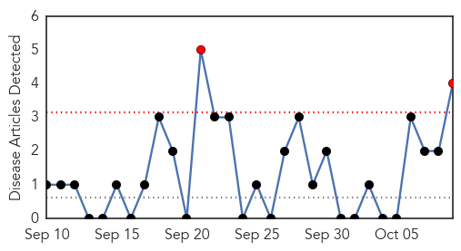
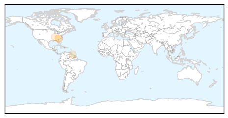
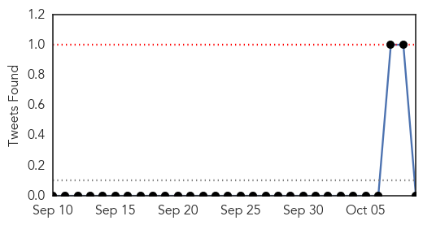

Mold/Fungal
30-Day Web Trend
2 alerts, 0 warnings

30-Day Twitter Trend
0 alerts, 0 warnings

Article Locations
Article Confidences
Top Articles:
Top Tweets:
-
No tweets found for Oct 09, 2015
Swine Flu
30-Day Web Trend
4 alerts, 0 warnings

30-Day Twitter Trend
0 alerts, 0 warnings

Article Locations

Article Confidences

Top Articles:
- 0.999
- Delhi doctors vaccinated for swine flu as Capital braces for another health crisis
- 0.999
- 59-year-old dies of swine flu at Safdarjung
- 0.994
- Delhi Prepares for Free, Compulsory Swine Flu Vaccine
- 0.988
- Delhi Health Minister asks health authorities to ensure free vaccination of Swine Flu
- 0.987
- newkerala.com, India Regional News 132428
- 0.984
- Flu shots available later this month
- 0.981
- UP man tests H1N1 positive
Top Tweets:
-
No tweets found for Oct 09, 2015